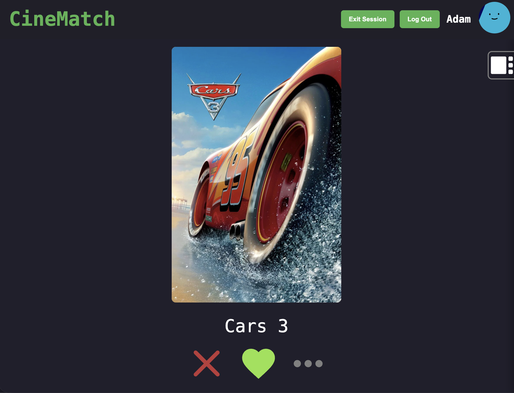
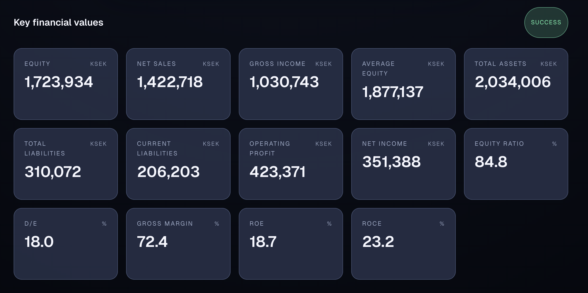
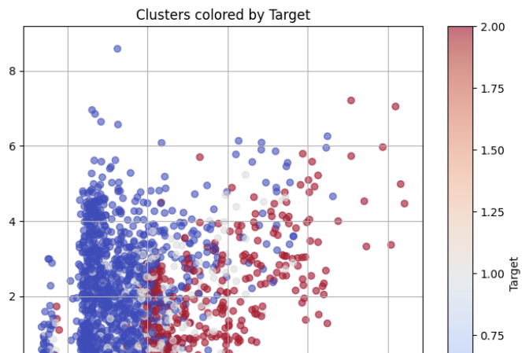

A few projects that showcase what I am capable of. From
idea, to prototype, to polished delivery.
Dynamic web app
CineMatcher

I developed this app with two friends. It's a web app that helps groups choose a movie to
watch using a tinder like interface combined with a smart movie algorithm and live sessions. This project
thaught me a lot about building user-auth and live session systems. It also grew my collaboration skills
having to work on a larger project with multiple people.
TypeScript
React
Firebase
UX
Git/Github
Try it ↗
Applied AI / Website · 2025
Report Kick

This project helps users upload company annual reports and
automatically extract key financial metrics such as net income
and return on equity. It demonstrates my ability to integrate AI
APIs with a responsive, modern frontend. The idea came from
watching my girlfriend, who studies industrial management,
manually search through reports for the same indicators, this
project makes that process faster.
Applied AI
TypeScript
React
Next.js
UX
Try it ↗
Machine Learning · 2024
Dropout Prediction

Implemented and tuned an XGBoost classifier to predict student
dropout risk using Python, scikit-learn and targeted feature
engineering. Running cross-validation and hyperparameter
searches to raise F1 scores while documenting insights.
ML
Python
scikit-learn
NumPy